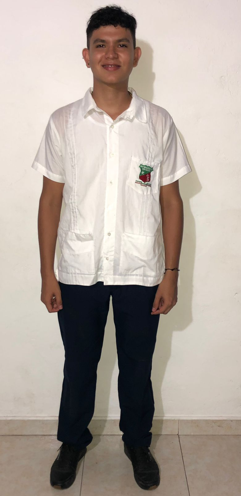
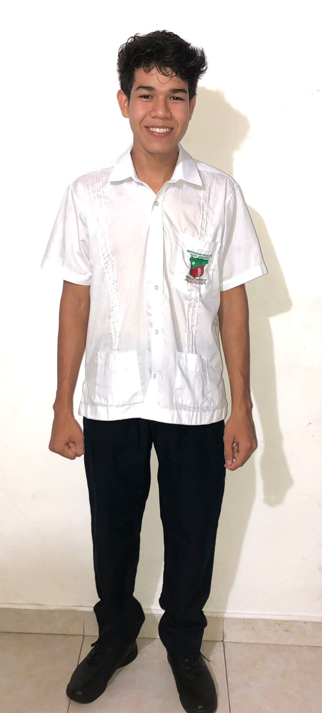
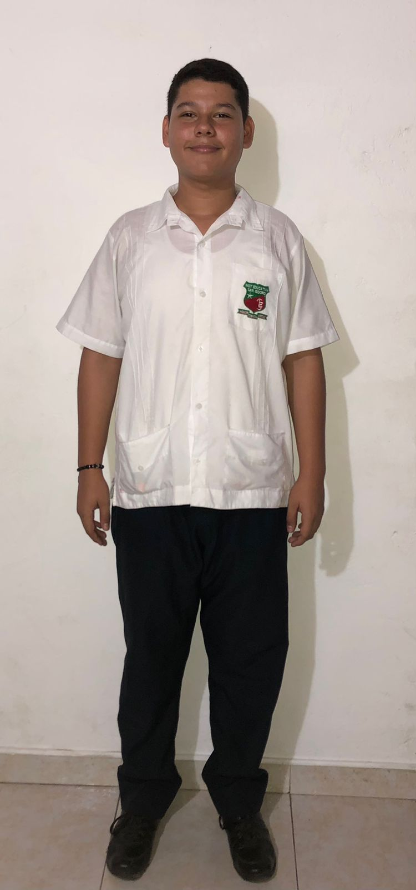
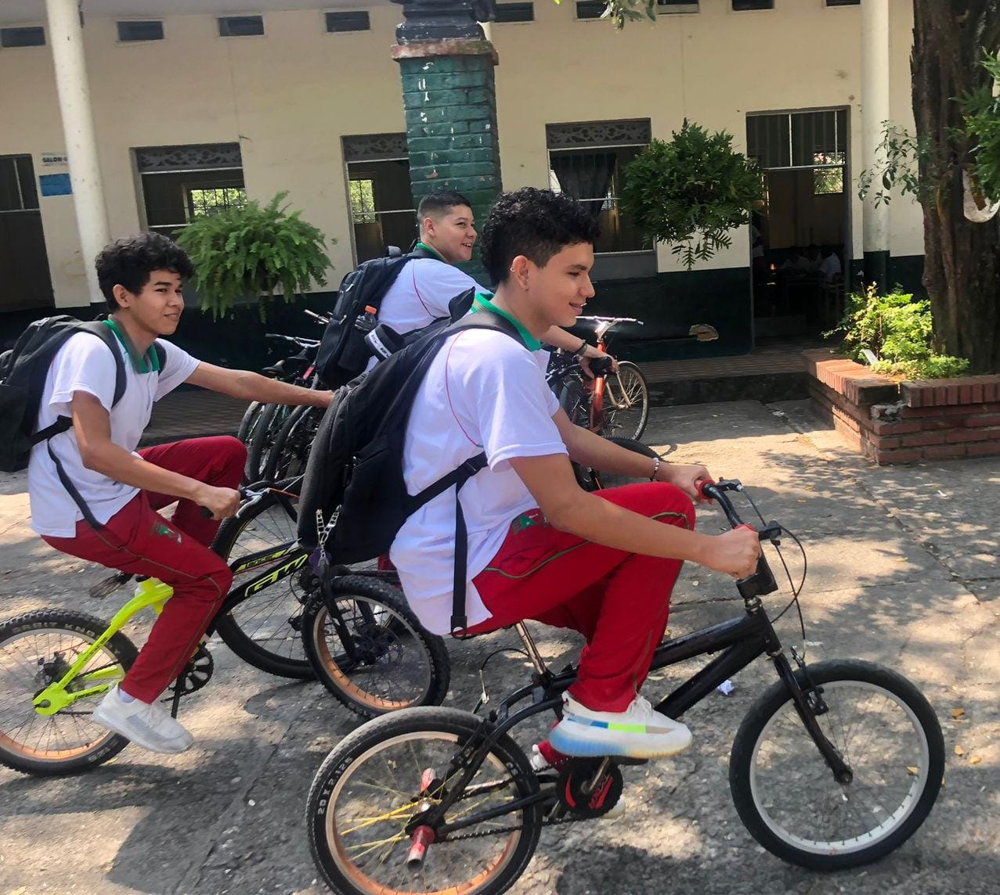
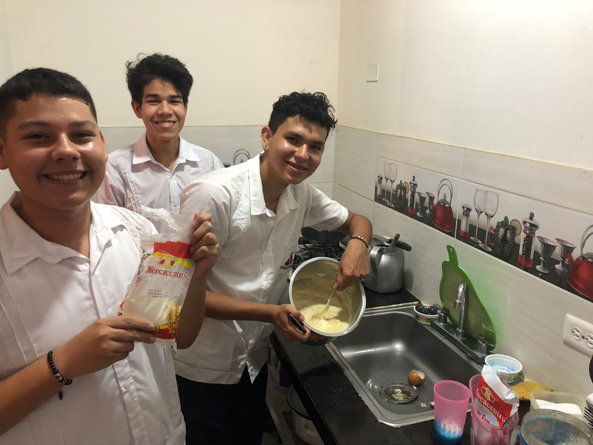
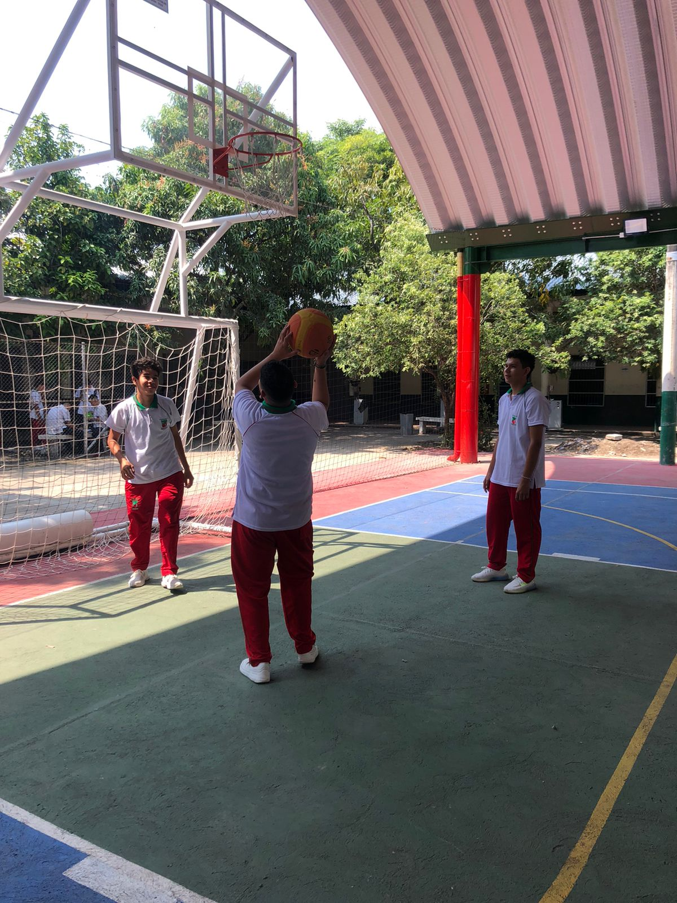
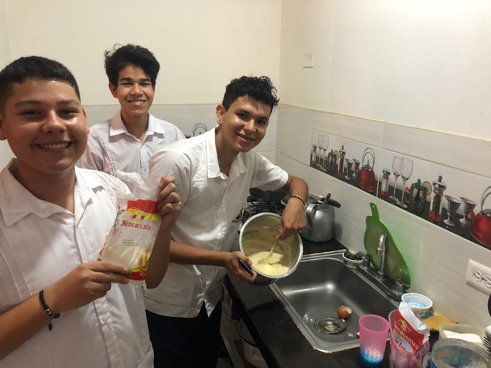
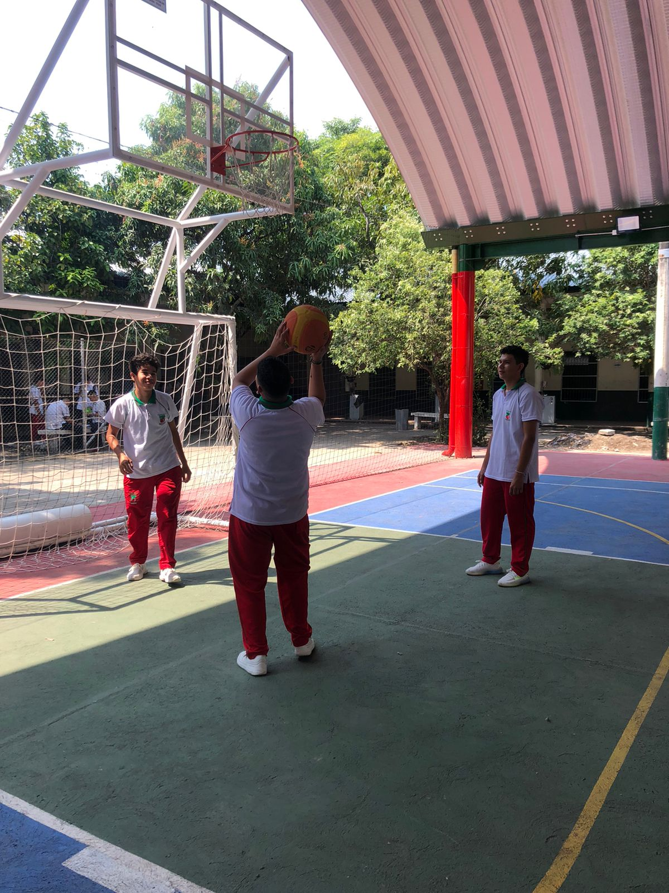

BIENVENIDO
Página de Daniel, Esteban y Santiago
Aquí veras todo sobre nuestras vidas
1. CUERPO ENTERO

Juan Esteban Villarra L.

Daniel Felipe Silva M.

David Santiago Ramirez M.
2. LOS TRES JUNTOS

Los tres somo unos amigos
inseparables nos conocemos
hace 6 años pasamos juntos y
disfrutamos con nuentros y
compañeros amigos mas
conocidos.
3. FAMILIA

Mi madre: Yency Magali Leon
g Mi hermana: Ingrid Dayana Leon
Mi sobrino: Ronald Gabriel Leon
Mi cuñado: Ferney Alvarez
Mi mascota: Pipe.

Mi madre: Diana Marcela Millán
Mi hermana: Zayra Sofia Millán
Mi hermano: Santiago Millán

Mi madre: Hasbledy Murillo
Mi abuela: Maria Islena Osuna.
4. NUESTRAS MASCOTAS

En esta foto aparecemos los
tres junto con nuestras
mascotasmascotas.
5.HACIENDO ASEO EN LA CASA

Este es uno de los oficios que
realizo en mi casa lo hago los
fines de semana.

Este es uno de los oficios que
realizo en mi casa lo hago los
fines de semana.

Este es uno de los oficios que
realizo en mi casa hago luego
lo de cada comida del dia.
6.BAÑANDO NUESTRAS MASCOTAS

Esta es mi mascota se llama pipe
aunque no le gusta mucho que lo
bañen se deja empieza a jugar
con el agua mientras lo baño.

Esta es mi mascota se llama
fiona y aunque no le gusta
mucho, que lo bañen se deja,
empieza a jugar con el agua
mientras lo baño.

Esta es mi mascota se llama
mariquita y aunque no le gusta
mucho que lo bañen se deja,
empieza a jugar con el agua
mientras lo baño.
7.MONTANDO CICLA

Montando cicla.
go up
go down
8.COCINANDO

Desde luego que cocinar no es
pára cualquiera pero en este
caso nos fue bien un poco
quemados por el aceite pero se
logro hacer lo que queriamos
que eran unos churros de arina.
9.LAVANDO LA LOZA

Este es uno de los oficios que
realizo en mi casa lo hago
luego de cada comida del
dia.

Este es uno de los oficios que
realizo en mi casa lo hago
luego de cada comida del
dia.
Este es uno de los oficios que
realizo en mi casa lo hago
luego de cada comida del
dia.
10.HACIENDO EJERCICIO

Estamos practicando un deporte
que es llamado baloncesto con los panas.
o
HIMNO DE LA INSTITUCION EDUCATIVA SAN ISIDORO
11. POLICIA

Nos ontramos con 2 agentes
policiales, fueron unas
excelentes personas que nos
ayuda a protegernos como
ciudadanos y estamos
orgullosos de ellos.
12. VIGILANTE

Fuimos al hospital san Rafael
del espinal y quisimos
tomarnos la foto con el
vigilante con una persona que
ayuda a cuidarnos y a
protegernos.
13. PADRE DE LA IGLESIA DEL DIVINO NIÑO

Visitamos la iglesia divino niño
donde nos recibio con los brazos
abiertos padre y muy
amablemente nos tomamos la
foto para el recuerdo.
14. MONUMENTO DE EL ESPINAL

Fuimos al parque mitológico
donde representa nuestros
municipio espinal tolima.
15. CEMENTERIO

Visitamos el cementerio jardines
del rosario donde descansan
nuestros seres queridos que
tanto amamos y respectamos.
Esta es una página web de tipo académica desarrollada con el objetivo de aprender html. Sin fines de lucro cualquier observación comunicarse al correo davidsantiagoramirezmurillo3@gmail.com
8.COCINANDO

Desde luego que cocinar no es
pára cualquiera pero en este
caso nos fue bien un poco
quemados por el aceite pero se
logro hacer lo que queriamos
que eran unos churros de arina.
9.LAVANDO LA LOZA
Este es uno de los oficios que
realizo en mi casa lo hago
luego de cada comida del
dia.
Este es uno de los oficios que
realizo en mi casa lo hago
luego de cada comida del
dia.
Este es uno de los oficios que
realizo en mi casa lo hago
luego de cada comida del
dia.
10.HACIENDO EJERCICIO

Estamos practicando un deporte
que es llamado baloncesto con los panas.
oHIMNO DE LA INSTITUCION EDUCATIVA SAN ISIDORO
11. POLICIA
Nos ontramos con 2 agentes
policiales, fueron unas
excelentes personas que nos
ayuda a protegernos como
ciudadanos y estamos
orgullosos de ellos.
12. VIGILANTE
Fuimos al hospital san Rafael
del espinal y quisimos
tomarnos la foto con el
vigilante con una persona que
ayuda a cuidarnos y a
protegernos.
13. PADRE DE LA IGLESIA DEL DIVINO NIÑO
Visitamos la iglesia divino niño
donde nos recibio con los brazos
abiertos padre y muy
amablemente nos tomamos la
foto para el recuerdo.
14. MONUMENTO DE EL ESPINAL
Fuimos al parque mitológico
donde representa nuestros
municipio espinal tolima.
15. CEMENTERIO
Visitamos el cementerio jardines
del rosario donde descansan
nuestros seres queridos que
tanto amamos y respectamos.